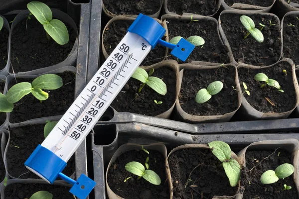

Sobre Nosotros
En Invernaderos Mendoza, ofrecemos un servicio de cultivo de plantulas a partir de tus propias semillas, garantizando un desarrollo óptimo en condiciones controladas. Nos dedicamos a proporcionar la mejor calidad y servicio para que tus proyectos agrícolas sean exitosos.
SERVICIOS

Germinación Acelerada
Utilizamos técnicas avanzadas para germinar tus semillas más rápidamente.
Más información
Control de Calidad
Nuestros procesos aseguran que cada plantula cumple con los estándares de calidad más altos.
Más informaciónAsesoría Personalizada
Ofrecemos asesoría personalizada para asegurar el mejor cuidado y resultados para tus cultivos.
Más información

climatizacion
Gran parte de las areas estan climatizadas para que las plantas germinen bien.
Más información